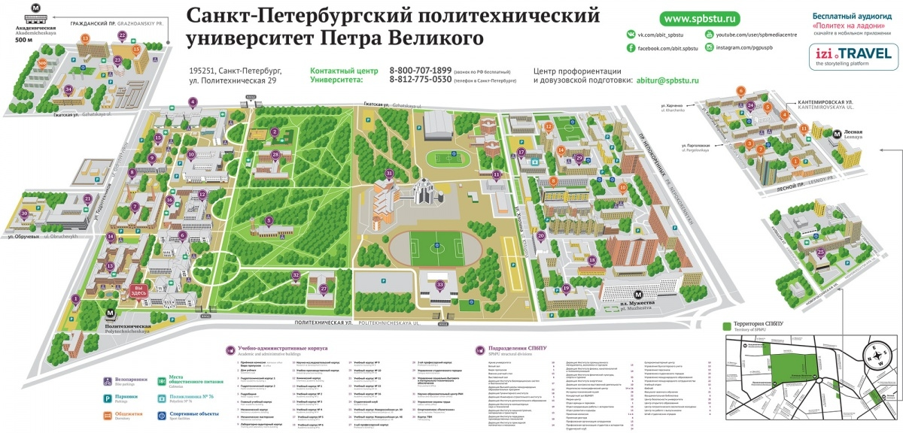

Здесь собрано всё, что нужно первокурснику: ссылки на СДО каждого института, расписание, карта кампуса, ответы на частые вопросы и важные контакты.
Самые важные сервисы, которые понадобятся в первые дни
Расписание, зачётная книжка, стипендия, учебный план — всё в одном месте
Найди расписание своей группы по номеру. Введи номер группы в строку поиска
Общий Moodle-портал. Некоторые курсы доступны здесь, другие — на портале своего института
Учебники, методички и научные статьи. Доступна по логину СПбПУ
Бесплатные онлайн-курсы СПбПУ по разным направлениям
Портал курса «Основы проектной деятельности» — обязателен для всех первокурсников
Адреса, условия проживания, документы для заселения и контакты студгородка
Размеры стипендий, порядок назначения, льготы и материальная помощь
Письмо пришло на e-mail, указанный при поступлении. Если не пришло — обратись на support@spbstu.ru
Перейди на my.spbstu.ru, проверь расписание и учебный план своего направления
Найди свой институт в разделе ниже и открой Moodle-портал. Там будут задания и материалы курсов
Кампус большой — изучи карту заранее, чтобы не опоздать на первую пару
Каждый институт имеет собственный Moodle-портал. Вход — по единой учётной записи СПбПУ (тот же логин/пароль)
Направления: лингвистика, история, философия, культурология, реклама и PR, международные отношения
Направления: строительство, архитектура, гидротехника, теплогазоснабжение, геодезия
Направления: биотехнологии, медицинская физика, биомедицинская инженерия, биоинформатика
Направления: информатика и ВТ, программная инженерия, кибербезопасность, ИИ, прикладная математика
Направления: машиностроение, материаловедение, автомобильный и железнодорожный транспорт, технология металлов
Направления: фундаментальная физика, прикладная математика, теоретическая механика, астрофизика
Направления: физическая культура, туризм, адаптивная физкультура, спортивный менеджмент
Направления: электроника, радиотехника, телекоммуникации, фотоника, микроэлектроника
Направления: теплоэнергетика, атомная энергетика, электроэнергетика, возобновляемые источники, теплотехника
Направления: техническая физика, ядерная и термоядерная энергетика, лазерные технологии, прикладная механика
Направления: менеджмент, экономика, торговое дело, управление качеством, логистика, маркетинг
Передовые программы: цифровое производство, промышленный ИИ, цифровые двойники, САПР
Политехнический университет расположен на проспекте Политехническом, 29. Кампус включает более 20 учебных корпусов и студенческий городок

Генеральный план кампуса (источник: spbstu.ru)
Деканаты, администрация, конференц-залы. Политехническая, 29
Физико-механический институт, лаборатории
Электронные и телекоммуникационные лаборатории
Компьютерные классы, ИКНиК, математические аудитории
Инженерно-строительный институт, гидравлические лаборатории
ИММиТ, станочные и механические лаборатории
Читальные залы, абонемент, медиатека. Вход по студ. билету
Студсовет, профком, клубы, столовая, медпункт
Крытый бассейн, спортзалы, стадион, хоккейная коробка
Ответы на то, о чём чаще всего спрашивают первокурсники
Данные для входа (единая учётная запись СПбПУ) автоматически отправляются на e-mail, указанный при поступлении — обычно в течение 1–2 недель после приказа о зачислении. Если письмо не пришло, напиши на support@spbstu.ru или обратись в учебный отдел своего института.
Перейди на ruz.spbstu.ru, в строке поиска введи номер своей группы (например, «3530901/10201»). Расписание также отображается в личном кабинете на my.spbstu.ru. Номер группы можно найти в приказе о зачислении или уточнить у старосты.
Центральный сервер lms.spbstu.ru содержит общеуниверситетские курсы (физкультура, иностранный язык, проектная деятельность). Институтские Moodle-порталы (например, dl-hum.spbstu.ru для ГИ) содержат курсы по профильным дисциплинам именно твоего института. Скорее всего, тебе понадобятся оба.
Списки студентов, которым предоставляется место, публикуются институтом до начала учебного года. Для заселения понадобятся: паспорт + копия, 3 фото 3×4 см, приписное свидетельство (для мужчин), справка о флюорографии. Подробно — на странице про общежития. Контакт студгородка: +7 (812) 248-92-09.
Студентам 1 курса стипендия назначается после первой сессии (первый семестр — без стипендии). Академическая стипендия: 3 000 руб./мес. за оценки «хорошо»/«отлично», 6 000 руб./мес. за только «отлично». Социальная стипендия назначается по заявлению студентам из льготных категорий. Заявление подаётся через open.spbstu.ru/stipend.
ОПД — обязательная дисциплина для всех первокурсников. В рамках курса студенты в командах разрабатывают учебный проект. Материалы курса и задания находятся на opd.spbstu.ru. Расписание встреч — в RUZ как обычные занятия.
На кампусе работает несколько столовых и буфетов: в Главном здании (цокольный этаж), Студенческом центре, корпусе ФизМех, а также в студенческом городке. Оплата — наличными и картой. Столовые обычно открыты с 9:00 до 17:00 в учебные дни.
Да, для входа в учебные корпуса нужен студенческий билет (пластиковая карта с чипом). Он оформляется в деканате в начале учебного года. До получения карты предъяви на входе документ, удостоверяющий личность, и покажи приказ о зачислении или справку из деканата.
Расписание сессии публикуется в RUZ и в личном кабинете. Дополнительно его вывешивают на информационных стендах деканатов. Обычно расписание появляется за 10 рабочих дней до начала экзаменационного периода.
Убедись, что используешь единую учётную запись СПбПУ (тот же логин/пароль для всех сервисов). Если забыл пароль — сбрось его на my.spbstu.ru. Если это не помогло, пиши на support@spbstu.ru или обратись в helpdesk ИТ-дирекции.
Да, официальный Телеграм-канал Университета — @spbptu_official. Там публикуются новости, анонсы, объявления для студентов. Дополнительно многие институты ведут свои каналы — узнай у однокурсников или старосты.
Студенческий билет оформляется в деканате вашего института в начале учебного года — обычно в сентябре-октябре. До получения пластиковой карты предъяви на пропускном пункте паспорт + распечатанную справку из деканата. Студенческий билет одновременно является пропуском по территории университета.
Куда обращаться по разным вопросам
Зачисление, переводы, академический отпуск, справки об обучении
Проблемы с учётной записью, доступом в СДО и цифровые сервисы
Заселение в общежитие, документы, условия проживания
Назначение стипендии, социальная поддержка, льготы
Студенческая жизнь, мероприятия, помощь первокурсникам